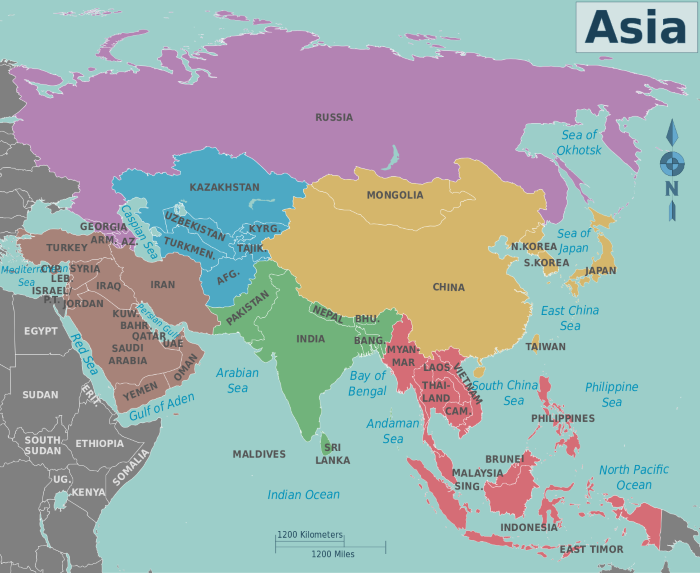

Click on a country.
If you are in the mood for Indian food, Tarka is a great choice for fast-casual. Clay Pit is great for something a bit more formal. Swad has fabulous vegetarian options.
If you want Chinese food, Happy Dragon is great for something a bit more formal. Fortune Garden is another great choice.
If it's time for Thai, Thai Spoon is my favorite.
When you want Korean food, Korean Grill is a good choice.
For Vietnamese food, Pho Hoang is a long-time favorite.